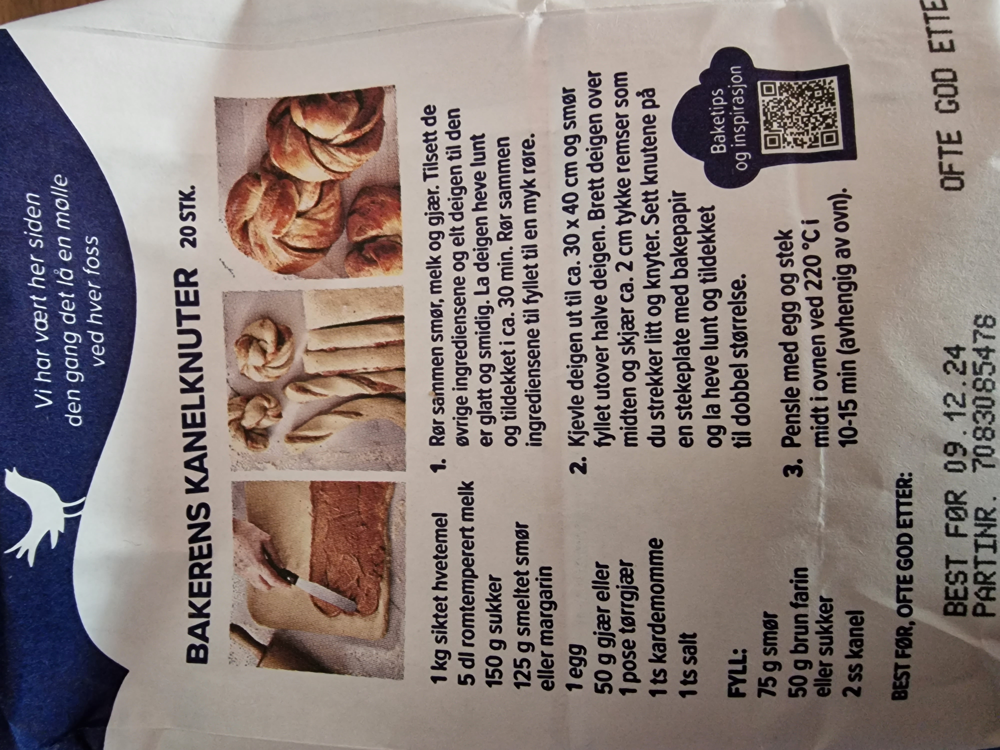
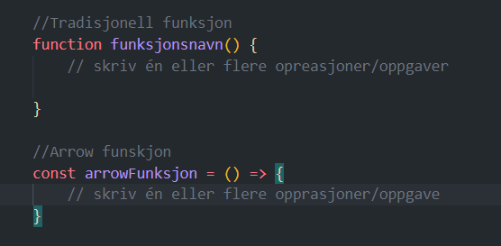
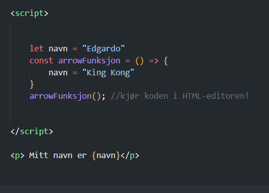
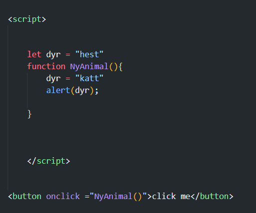

Hva betyr å kode?
Algoritmer vs Funksjoner
Koding refererer til språkene som lar oss kommunisere med datamaskiner og
er prosessen med å skrive algoritmer for å oppnå bestemte oppgaver. Noen definerer
'koding' som prosessen med å skrive et sett med en eller flere funksjoner for å oppnå noe.
Er algoritmer og funksjoner det samme? I matematikk og informatikk, har 'algoritmer' og 'funksjoner'
lignende betydninger, men forskjellen ligger i det faktum at en funksjon kan inneholde en eller flere algoritmer.
Ifølge Store Norske Leksikon er en algoritme i matematikk og databehandling en fullstendig og nøyaktig beskrivelse av fremgangsmåten for å løse en beregningsoppgave eller en annen oppgave. En algoritme kan for eksempel være 'x + y = z,' og dette kalles ofte en 'operasjon' eller 'oppgave.' En funksjon er et program eller et sett av programmer som utfører en eller flere operasjoner eller oppgaver for å oppnå noe. Det kan være vanskelig å se forskjellen mellom disse to begrepene, selv om du bruker algoritmer og funksjoner mye mer enn du kanskje tror. La oss se på noen praktiske eksempler.
For å lage kanelknuter skal du gjennomføre følgende operasjoner:
Operasjon 1: Rør sammen smør, melk og gjær. Tilsett de øvrige ingrediensene og elt deigen til den er Glatt og smidig. La deigen heve lunt og tildekket i ca. 30min. Rør sammen ingrediensene til fyllet til en myk røre. .
Operasjon 2: Kjevle deigen ut til ca. 30 x 40 cm og smør fyllet utover fyllet halve deigen. Brett deigen over midten og kjær ca. 2 cm tykke remser som du strekker til o knyter. Sett knutene på stekeplate med bakepapir og la heve lunt og tildekket til dobbel størrelse.
Operasjon 3:Pensle med egg og stekk midt i ovnen ved 220C i 1 0-15min.
Funksjoner og løkker i javaScript
Funksjoner i javaScript deler strukturen med oppskrifter: en flere operasjoner gjennomføres, en etter andre.
Måten vi skriver (definerer) en funksjon i javaScript ligner på bildet overnfor. Her skal du se 2 forskjellige måter å skrive en funksjon på:

Arrow-funksjonen er definert som en kosntant fordi funksjonen aldri skal endre seg, selv om funksjonen i seg selv ofte endre seg på noe.
for å kalle på en funksjon skriver vi funksjonsnavn(), uansett om funksjonen er en tradisjonell funksjon eller arrow-funksjon.
Tradisjonell skrev vi funksjoner med kodeordet function. Nå bruker vi gjerne det som kalles en arrow-funksjon.
Et eksempel:
Funksjonen arrowFunksjon har kun en operasjon: Funskjonen endrer verdien til variabelen navn.
Interaktive operasjoner
La oss definere en enkel funskjon, og bruke samme eksempel ovenfor. Et klikk på en knapp skal endre navnet til et dyr til noen annet enn det var først. I javaScript-koden definerer vi funksjonen nyAnimal, og i HTML-koden definerer vi at et klikk skal starte funksjonen. Vi får en varsel med verdien til variabelen dyr:
prøv du selv og skiv koden i HTML-editoren